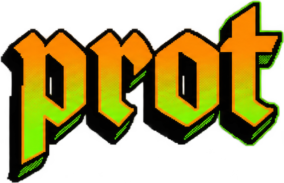
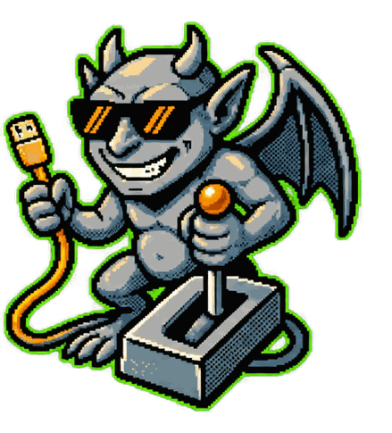
Stable .localhost URLs and one control plane for all your development servers.
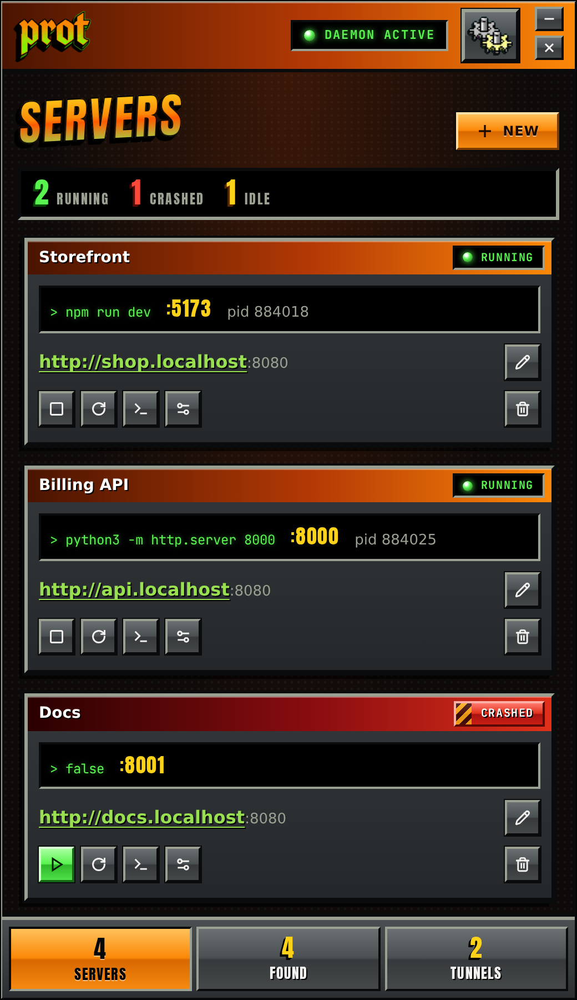
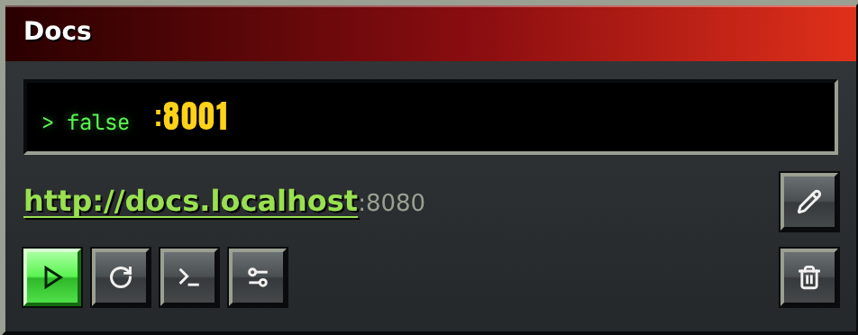
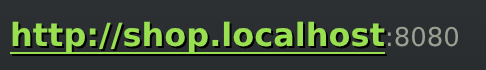
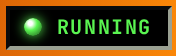
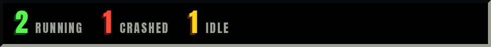
Every dev server gets a stable address like shop.localhost. Ports, PIDs and machines change; the name
doesn’t. prot forwards it to wherever the server is listening, so bookmarks and config files can point at the name
and stay right.
prot starts your servers, watches them, and brings a crashed one back, waiting longer after each failure (1s, 2s,
4s, as in the log). Its output is kept, so you can read why it died. Mark a server --auto-start and
protd starts it with your session.
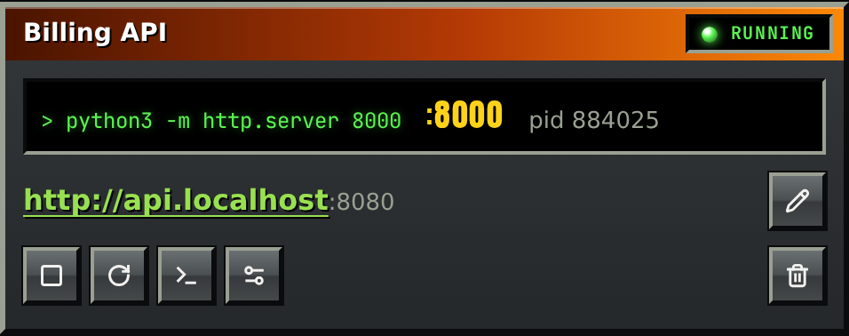
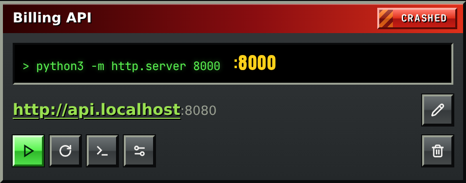
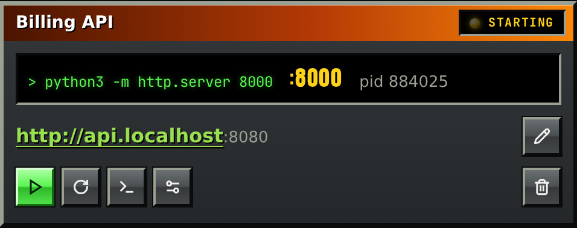
prot does everything from the terminal: add, start, stop, logs, tunnels, and --json for
scripts. The desktop app is a client of the same daemon, so the two always agree, and closing the app never stops a
server.
Reach a port on another machine at proxmox.localhost. prot runs your system’s OpenSSH, reconnects
when the link drops, and takes machines from your ~/.ssh/config. A password or passphrase goes in the OS
keyring, never on disk or in a command line.
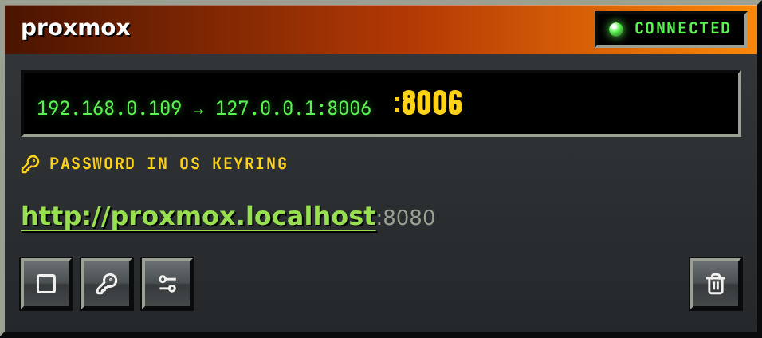
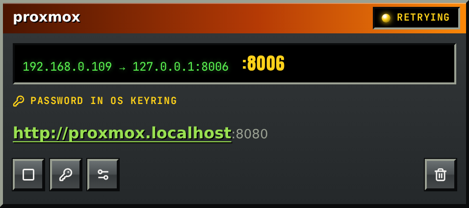
prot mcp speaks the Model Context Protocol, so an agent can list your services, read their logs and
start what it needs. Tunnels it can list, start and stop, but never create or edit, and it never sees a password.
{
"mcpServers": {
"prot": {
"command": "prot",
"args": ["mcp"]
}
}
}